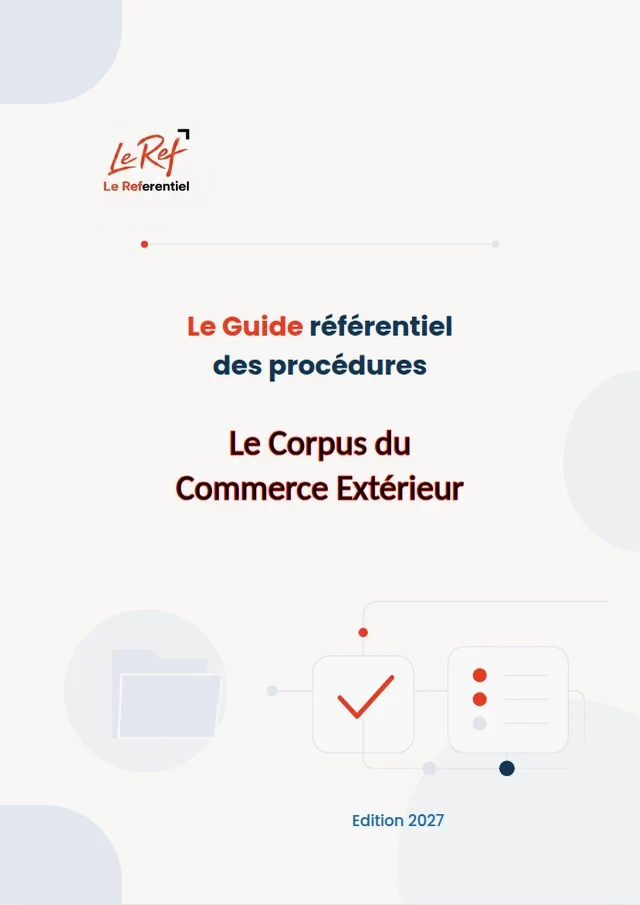

Maroc · CEX · Édition 2027
Corpus du commerce extérieur
Le Corpus des Procédures du Commerce Extérieur
Importer et mettre sur le marché au Maroc : titres d'importation et d'exportation, restrictions quantitatives, conformité des produits industriels, contrôle à l'importation, répression des fraudes et défense commerciale.
- 63paragraphes
- 20chapitres
- 6parties
- 21fichiers JSON
- 43pages (PDF)
Disponible prochainement (option d'achat)
Pages préliminaires et annexes
Contenu
63 paragraphes · 20 chapitres · un fichier JSON par chapitrePartie 1Le cadre du commerce extérieur
20 paragraphes
1.2 Les titres d'importation et d'exportation
- 1-010Le principe : aucun dédouanement sans titre
- 1-011Qui est dispensé de l'engagement d'importation
- 1-012L'engagement d'importation, étape par étape
- 1-013Le contenu obligatoire du contrat commercial
- 1-014Validité, imputations partielles et tolérances
- 1-015La licence d'importation
- 1-016La licence d'exportation
Partie 2La conformité des produits industriels
24 paragraphes
2.3 Le contrôle des produits industriels importés
- 2-020Trois listes à consulter avant toute commande
- 2-021Les réglementations techniques de la liste NMO
- 2-022Les évolutions récentes de la liste NMO
- 2-023Contrôle à l'origine ou à l'arrivée
- 2-024Les seuils de dispense du contrôle à l'origine
- 2-025Les produits nouvellement soumis au contrôle à l'arrivée
- 2-026Ce qui se passe quand un produit importé paraît dangereux
2.4 Laboratoires, OEC agréés et accréditation
- 2-030Agrément et accréditation : deux notions distinctes
- 2-031Les OEC ayant demandé le maintien de leur agrément (liste du 3 septembre 2025)
- 2-032Les laboratoires accrédités NM ISO/IEC 17025
- 2-033Les redevances d'accréditation à partir de 2026
- 2-034La métrologie légale : les importateurs agréés d'instruments de mesure